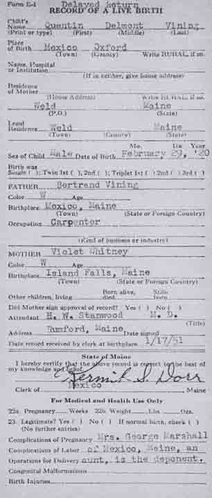
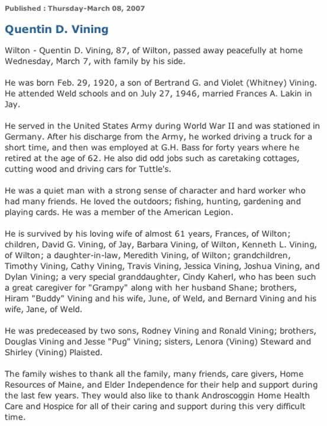
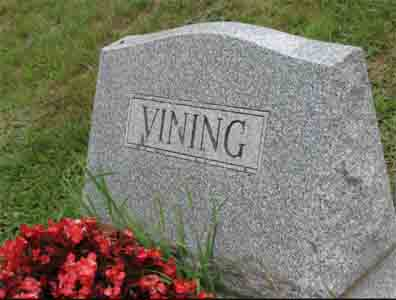
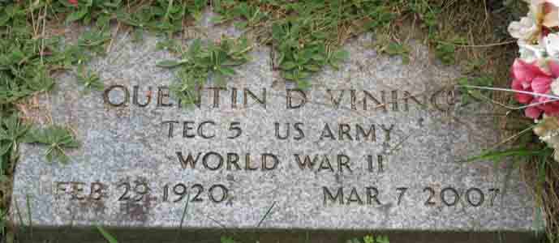
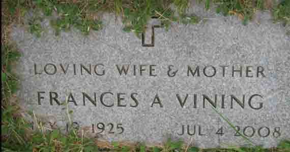

Documentation for Quentin Delmont Vining - Frances [Aletha or Althea?] Lakin
Birth Data
Birth record for Quentin Delmont Vining (from Maine State Archives):

Death Data
Obituary for Quentin Delmont Vining (from [Lewiston, Maine] SunJournal.com):

Headstone for Quentin Delmont Vining and Frances [Aletha or Althea?] (Lakin) Vining; in Lakeview Cemetery, Wilton, Franklin County, Maine (Source - Find A Grave):

Gravestones for Quentin Delmont Vining and Frances [Aletha or Althea?] (Lakin) Vining, in Lakeview Cemetery, Wilton, Franklin County, Maine (Source - Find A Grave):

